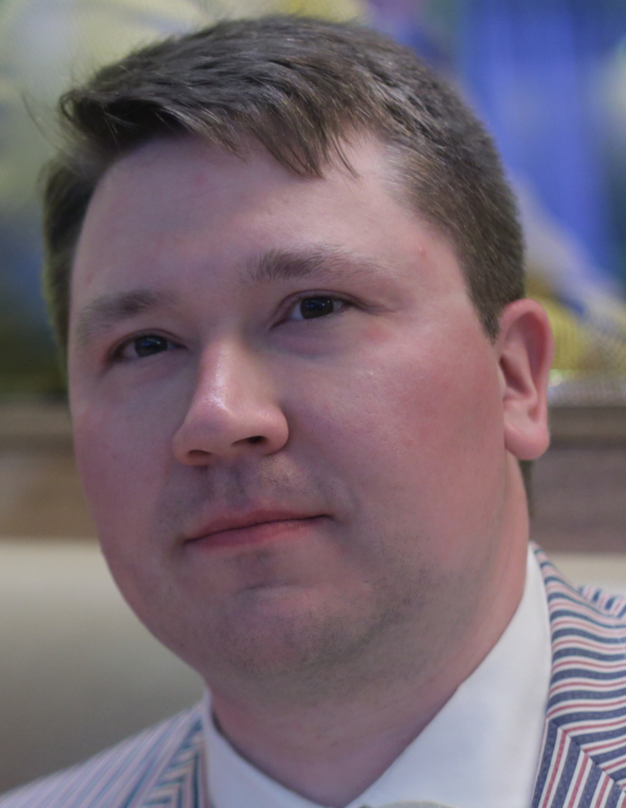
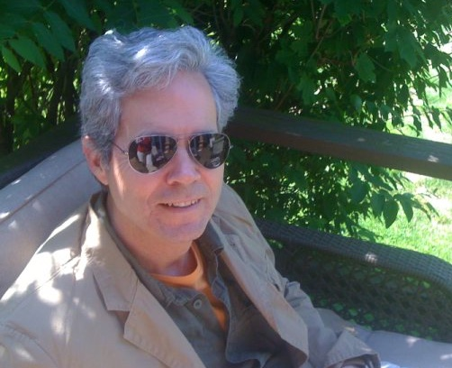
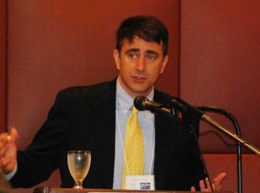
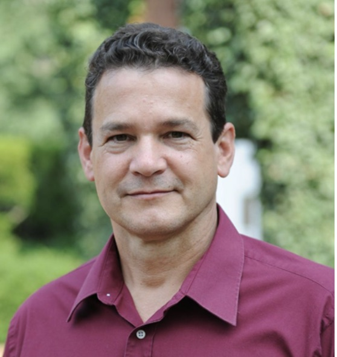
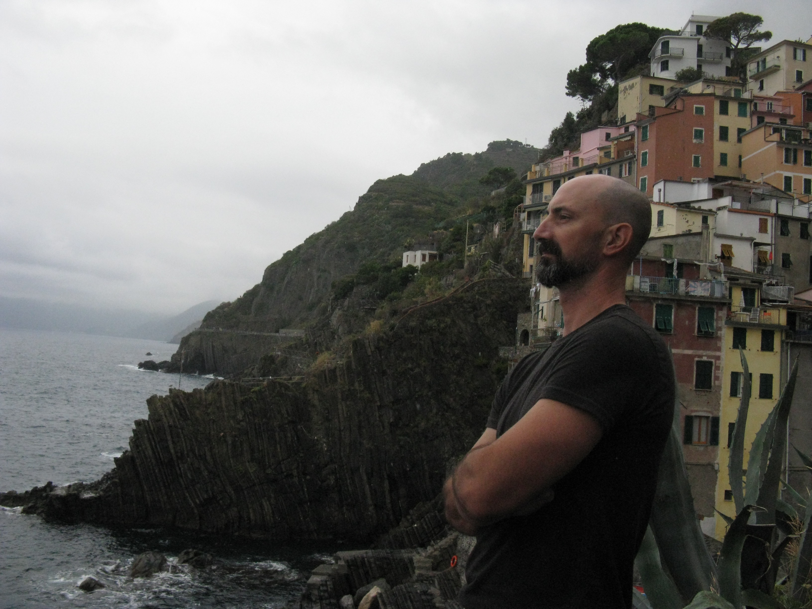
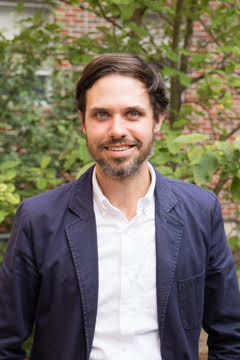
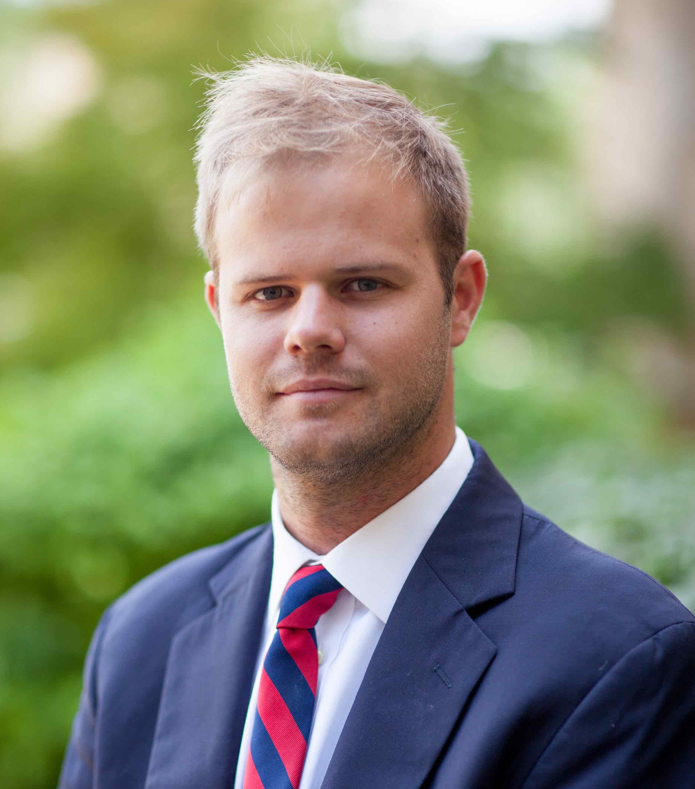

Contributor Bios
-
Corey Abel
is the editor of Intellectual Legacy of Michael Oakeshott
and The Meanings of Michael Oakeshott's Conservatism.
-
Nathanael Blake
earned a PhD in political theory from the
Catholic University of America, and has written for a variety
of scholarly and popular publications. He resides in Missouri.

-
Thomas J. Brommage
earned his Ph.D. in philosophy at the
University of South Florida, writing on Wittgenstein’s early
philosophy. His research mostly centers on the history of
analytic philosophy, philosophy of language and logic—although
much of his more recent work has been focused on the philosophy
of humor. He is a founding member and an executive officer in
the Lighthearted Philosophers’ Society. Previously he has
taught at USF, as well as at Denison University, University of
Tampa, Misericordia University and the University of West
Georgia. He is currently a Lecturer at Sam Houston State
University in Huntsville, TX.
-
Gene Callahan
has a PhD in political theory from Cardiff
University and a Master's in the philosophy
of the social sciences from the LSE.
He is the author of Economics for Real
People, Oakeshott on Rome and America,
and co-editor of Tradition v. Rationalism. He teaches
at New York University.

-
W. J. Coats
is Professor of Government at Connecticut College where he
teaches courses in the history of Western political theory,
ancient, medieval and modern. He is published widely in the
field of political theory, especially with regard to the work
of the 20th century, English philosophic essayist, Michael
Oakeshott.

-
Nick Cowen
has a PhD from the Department of Political Economy, King’s
College London, and degrees from the University of Oxford and
University College London. He has written for the American
Journal of Political Science, Critical Review and
the Review of Austrian Economics.

-
Michael Federici
is Professor of Political Science at Middle Tennessee State
University and chair of the Department of Political Science and
International Relations. He has published five books, The
Challenge of Populism, Eric Voegelin: The
Restoration of Order, The Political Philosophy of
Alexander Hamilton, Rethinking the Teaching of American
History (an edited volume), and a co-edited collection of
essays entitled, The Culture of Immodesty in American Life and
Politics: The Modest Republic.
-
Jason Ferrell
currently teaches political theory at Concordia University,
having also taught McGill University and Mount Allison
University. His research interests include the thought of
Isaiah Berlin, value pluralism, and distributive justice.
His articles have appeared in Political Theory,
Contemporary Political Theory,
and the Critical Review of International
Social and Political Philosophy. He has also authored a
“Glossary of Names” for the second edition of Isaiah Berlin’s
Russian Thinkers.
-
Justin D. Garrison
is an associate professor of political science at Roanoke
College in Salem, Virginia. He is a political theorist who
researches the relationship between politics and the
imagination. He is the author of journal articles, book
chapters, and the book An Empire of Ideals: The Chimeric
Imagination of Ronald Reagan.
He is also co-editor of the
book The Historical Mind: Humanistic Renewal in a
Post-Constitutional Age.
-
Ryan R. Holston
is Professor and holder of the Jonathan Myric Daniels '61
Chair for Academic Excellence at Virginia Military Institute.
He is also an Associate Editor at the journal
Humanitas. His published work has appeared in
History of Political Thought, Telos, and
Harvard Theological Review, among other places. He is
currently writing a monograph, whose working title is
Tradition and the Deliberative Turn, and is co-editor
of a forthcoming book entitled The Historical Mind:
Humanistic Renewal in a Post-Constitutional Age (Albany,
NY: SUNY Press,
2020).

-
Ferenc Hörcher
is a political philosopher and historian of political thought.
His PhD was on the Scottish Enlightenment. He is research
professor and director of the Research Institute of Politics
and Government at the National University of Public Service in
Budapest. He is senior fellow and earlier director of the
Institute of Philosophy of the Hungarian Academy of Sciences.
His publications include Prudentia Iuris: Towards a
Pragmatic Theory of Natural Law (2000) and the coedited
volume: Aspects of the Enlightenment: Aesthetics, Politics, and
Religion (2004). Most recently he co-edited an co-authored
the volume: A History of the Hungarian Constitution. Law,
Government and Political Culture in Central Europe (2019).
A Political Philosophy of Conservatism, Prudence, Moderation and
Tradition is in print with Bloomsbury, scheduled to get
published in 2020.
-
Sanford Ikeda
is Professor of Economics at SUNY Purchase. He is an
internationally recognized scholar of Jane Jacobs' work, and the
author of Dynamics of the Mixed Economy: Toward a Theory of
Interventionism.
-
Jin Jin
Jin Jin is a graduate student at the University of
Wisconsin-Madison. He received his B.A. with honors in
Political Science from Concordia University in Canada, winning
the Renée Vautelet Prize as the most outstanding student in his
program. His honors thesis, entitled “The Seas to Rove and the
Sea of Roving Men: Self-Awareness in Tocqueville’s
Recollections and Fortnight in the Wilderness,” discusses
Tocqueville’s self-awareness as a pathway to his thought on
human nature.
-
Steven Knepper
is an assistant professor in the Department of English,
Rhetoric, and Humanistic Studies at Virginia Military
Institute. His research interests include American literature,
tragedy, and aesthetics. His writings have appeared in
Telos, The Robert Frost Review, The Cormac
McCarthy Journal, Religion & Literature, and
other journals. He is currently writing about the philosopher
William Desmond's approach to literature.

-
Eric S. Kos
is associate professor of political science and Chair of the
Social Sciences Division at Siena Heights University in Adrian,
Michigan. His work includes essays on Plato, Oakeshott, and
von Balthasar, and he has a monograph titled
Michael Oakeshott, The
Ancient Greeks and the Philosophical Study of Politics
(Imprint Academic, 2007), and is currently editing a collection
of essays on Oakeshott, authority, and the state.
-
Charles W. Lowney II
is an Assistant Professor of Philosophy at
Hollins University, Roanoke, Virginia, USA. He received his
masters in philosophy at Boston College, where he studied
Continental Philosophy, and his doctorate at Boston University,
where he studied Analytic Philosophy. He is interested in
applying the concepts of emergentism and tacit knowing to
ethics, society, and religion, and has done so in articles such
as "Authenticity and the Reconciliation of Modernity" (2009),
"From Science to Morality" (2009), "Morality: Emergentist
Ethics" (2010), "From Morality to Spirituality" (2010), and in
a chapter, "Four Ways of Understanding Mysticism" in Mysticism
and Silence (forthcoming, Palgrave Macmillan, Laura Weed, ed.).
Lowney is also the editor of Charles Taylor, Michael Polanyi
and the Critique of Modernity: Pluralist and Emergentist
Directions (2017).

-
Daniel J. Mahoney,
Professor of Politics at Assumption College in
Worcester, Massachusetts, has written widely on politics and
political thought. His most recent book is
The Idol of Our Age: How the Religion of Humanity Subverts
Christianity.
-
Kenneth B. McIntyre
is an Professor of Political
Science at Sam Houston State University. He is the author of
The Limits of Political Theory: Michael Oakeshott on Civil
Association,
Herbert Butterfield: History, Providence, and
Skeptical Politics,
and has also written essays on the
philosophy of history, ordinary language philosophy, American
constitutionalism, and practical reason. He is currently
working on a book on value pluralism, liberty, and the rule of
law.
-
Luke Sheahan
is a Post-Doctoral Associate and Research Fellow in the
Department of Political Science at Duke University. He
researches the intersection of First Amendment rights and
political theory.

-
Jack Simmons
is a Professor of Philosophy at Georgia Southern
University, in Savannah, Georgia. His research focuses on
discourse ethics and hermeneutics, leading to publications in
bio-ethics, film, television, technology and science.

-
Travis D. Smith
is Associate Professor of Political Science at Concordia
University in Montreal. he has published on Thomas Hobbes and
Francis Bacon, and is the author of Superhero Ethics
(Templeton, 2018) and co-editor (with Marlene K. Sokolon) of
Flattering the Demos (Lexington, 2018).

-
Daniel John Sportiello
is an assistant professor of philosophy
at the University of Mary in North Dakota. He has published
several book reviews with the Notre Dame Evolution Working
Group; he also contributed a chapter on Eric Voegelin to
Tradition v. Rationalism: Voegelin, Oakeshott, Hayek, and
Others.

-
Rob Wyllie
is a Ph.D. candidate in the Department of Political Science at
the University of Notre Dame. His research focuses upon
Spinoza's moral psychology as a pivot in the modern
understanding of envy. His work, which includes several
articles on the political theory of Kierkegaard, has appeared
in Perspectives on Political Science,
Res Philosophica, Telos,
and other journals.
